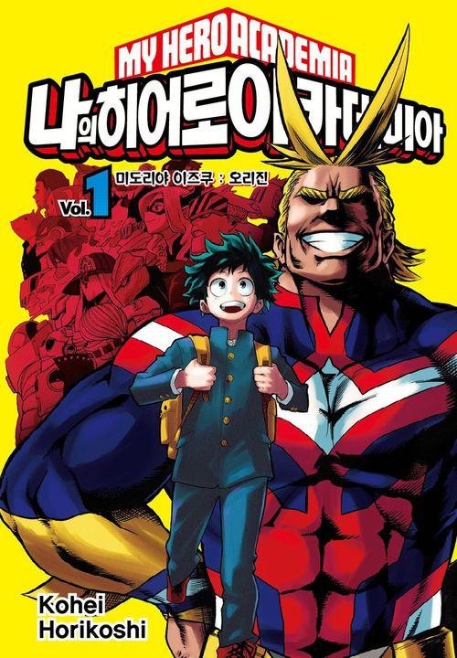

나의 히어로 아카데미아 -인기
僕のヒーローアカデミア
주요 등장인물
발매 현황
인기
소설

개성이란 이름의 초능력을 기반으로 한 히어로와 빌런이 대치하는 사회라는 심플하면서 뻔해 보이는 배경과 다르게 상승세를 유지하고 있다. 2010년대 점프 연재작 중에서 귀멸의 칼날과 함께 가장 대중적으로 성공한 작품이자 외국에서도 가장 흥행하고 있는 작품이다. 가면 갈수록 왕도물의 인기가 위태로워지는 시대에 신규 왕도물로서는 거의 유일하게 선전하고 있다.